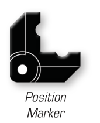

POSITION MARKER

The position marker is used to assist with tracking the position of intervening ships when attempting to move ships. To use the position marker, place it at the corner of an intervening ship, aligning the guides with the holes in the position marker. This will track the position of the ship in order to place it back in the play area accurately.